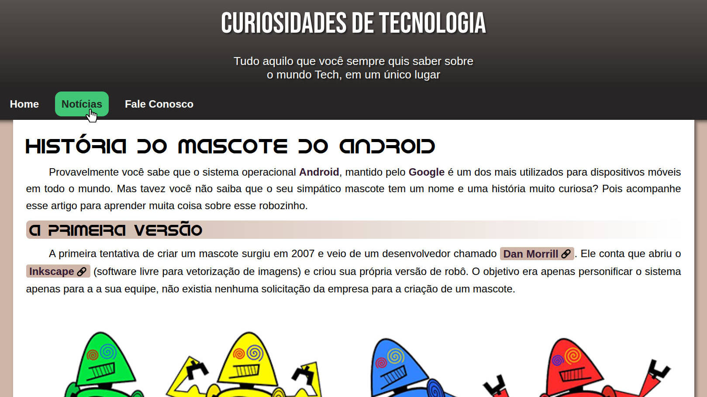
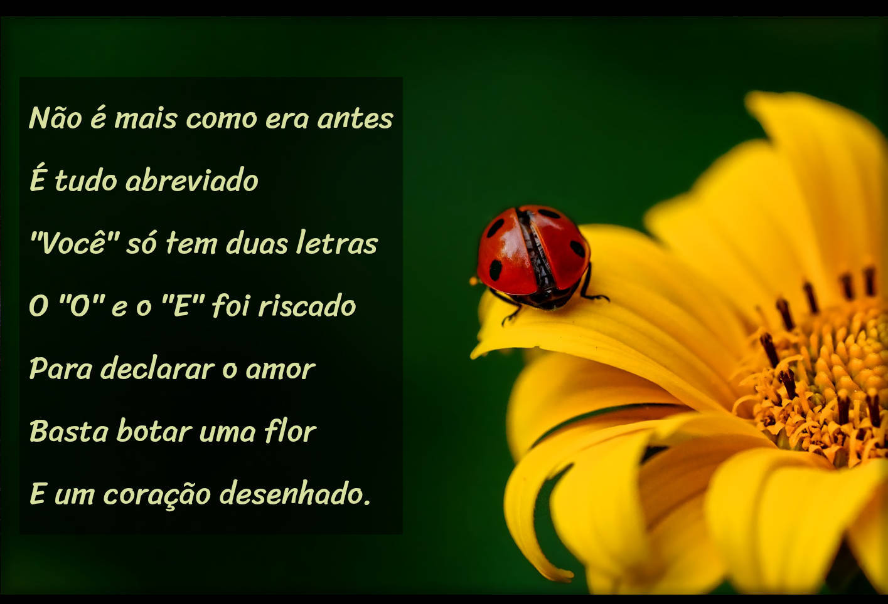
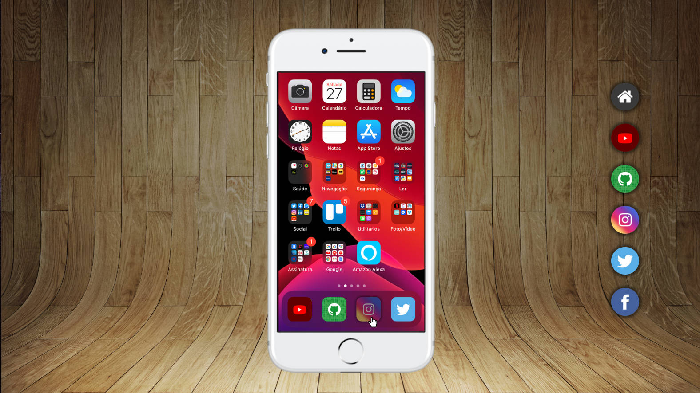
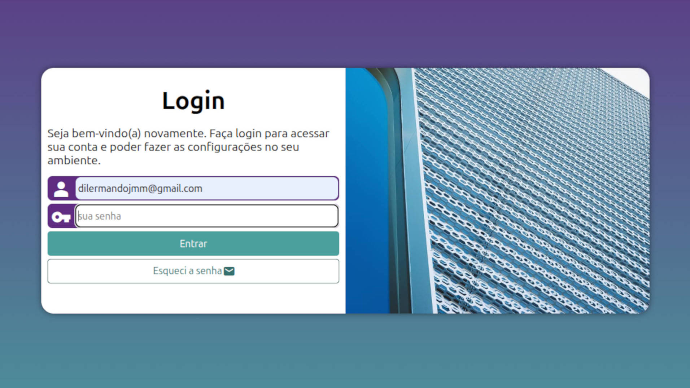

Dilermando Junior
Interessado em tecnologia desde cedo, possuo formação básica em Montagem e Manutenção e introdução ao Web Design. Atualmente, foco meus estudos no Desenvolvimento Web, área que escolhi pela necessidade de aprendizado contínuo e inovação constante. Minha paixão é o ato de criar e construir projetos do zero, unindo o que aprendi sobre o funcionamento das máquinas com a versatilidade da programação.
Minhas skills
HTML5
95%
CSS3
87%
JavaScript
01%
PHP
00%
Comunicação
80%
Adaptabilidade
95%
Trabalho em equipe
85%
Liderança
70%
Formação
2017 - 2018
Montagem e Manutenção de Computadores
Centro de Formação Profissional (CNI)
2017 - 2018
Inglês Basico
Centro de Formação Profissional (CNI)
2018 - 2019
Web Desing
Centro de Formação Profissional (CNI)
2026
HTML5 e CSS3
Curso em Video
Projetos

2025
Projeto de Vídeos
Projeto construido para treinar a inserção de videos em nosso site.
Saiba mais...
Este site cria uma galeria de vídeos simples e estática, servindo como exercício prático de navegação entre páginas e inserção de mídias [🧱]. Ele estrutura uma página em português com um título principal e quatro miniaturas clicáveis que direcionam para páginas internas específicas na pasta "paginas" [🧱].
2026
Projeto Android
Projeto construido para treinar contéudos e imagens dinâmicas.
Saiba mais...
Este projeto é uma página web desenvolvida em HTML5 e CSS3 com o objetivo de apresentar a história do mascote oficial do Android, o Bugdroid, de forma visual, organizada e educativa. A estrutura inclui um cabeçalho estilizado com gradiente, um menu de navegação simples e funcional, e um conteúdo principal que combina texto informativo, imagens históricas, e um vídeo responsivo incorporado do YouTube para enriquecer a experiência do usuário.
A página explora a criação do mascote, destacando a designer Irina Blok e apresentando versões anteriores como os Dan Droids. O projeto utiliza recursos modernos como tipografia personalizada via @font-face, variáveis CSS, imagens fluidas, e técnicas responsivas que garantem boa visualização em diferentes dispositivos.
Também inclui uma seção lateral com curiosidades e uma lista estilizada, além de um rodapé simples para finalizar a página. O código prioriza boa legibilidade, semântica e organização, servindo como excelente exercício de desenvolvimento front-end.

2026
Projeto Cordel
Projeto construido para treinar efeito paralax em imagens.
Saiba mais...
Este projeto apresenta o cordel “Cordel Moderno” em uma página web estilizada com HTML5 e CSS3. O site utiliza seções alternadas de texto e imagens com efeito parallax, criando uma experiência de leitura moderna e envolvente. A página é totalmente semântica, responsiva e organizada, combinando poesia tradicional com elementos visuais contemporâneos. Um excelente exercício de estruturação, design e uso do CSS para efeitos visuais.
2026
Projeto de Links
Projeto construido para treinar a inserção links e divs em nosso site.
Saiba mais...
Este projeto simula a navegação por redes sociais dentro da tela de um smartphone utilizando HTML5, CSS3 e um iframe central. A interface apresenta um iPhone estilizado, no qual diferentes páginas (Instagram, YouTube, GitHub, Facebook etc.) são carregadas sem recarregar o site. O layout inclui ícones laterais, efeitos visuais, botões personalizados e páginas individuais para cada rede. O projeto serve como prática de estruturação, navegação interna e estilização moderna com CSS.
2026
Projeto Login
Projeto construido para treinar a criação de paginas de login.